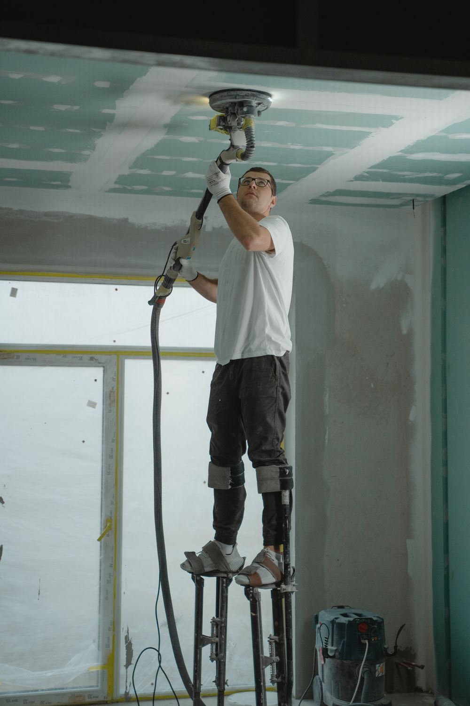
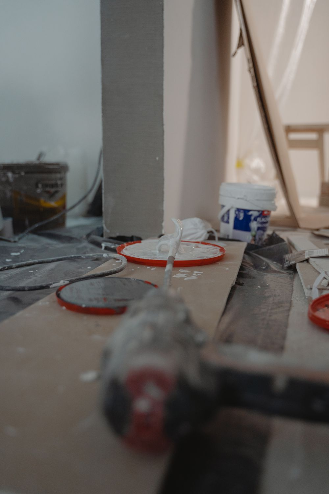

Each service below says where it comes from: a customer who named it in a Google review, or one of the topics Google counts across all 24. Nothing here is a service we simply decided to advertise.
Small handyman jobs
The jobs that never quite justify calling a contractor, and the ones most handymen quietly stop returning calls about, because they do not pay like a renovation. Ours get scheduled and finished.
Sliding doors swapped for French pairs, doors rehung, frames squared, thresholds and weatherseals renewed. When the old unit comes out the opening itself usually needs attention, and that is part of the job rather than an extra.
Replacing fixtures inside and out, plus the switching that goes with them. Often fitted during the same visit as a larger job. One customer got a new French door and new lights on the same day.
Heads, valves, timers, broken laterals, and the slow leaks you only catch by watching the meter with everything off. A Central Florida system runs most of the year, so it wears out like something that runs most of the year. A stuck zone can waste more water in a month than the repair costs.
Wind-driven water through exterior joints is the classic Florida failure and the hardest to diagnose, because it only shows itself in weather. That is exactly why it survives inspection after inspection. We chase the path the water takes, not the stain it leaves.
Jobs that need a layout altered rather than ripped out, or another vendor on site at the same time. One customer's job needed both, and they called the reconfiguration element tricky, meaning it was not a swap, it was a rethink.
Work that legally requires a licensed trade, such as new electrical circuits, plumbing alterations or structural changes, is coordinated with an appropriately licensed contractor rather than carried out in place of one. Ask when you call and we will tell you which part of your job that applies to.
The work

Making a ceiling good, the step after a leak is stopped
Representative photo, not this customer's home

Small jobs, the list that never justifies a contractor
Representative photo, not this customer's home
Why Choose R&R?
Five things our customers wrote about us, and nothing we cannot point at.
You speak to Rickey directly
One call reaches the person who does the work, not an office and not a queue. Reviewers mention the communication more than almost anything else.
The price is discussed before work starts
“Fair price” and “reasonable price” are the two phrases that recur most across the reviews. Both depend on the number coming first.
Small jobs actually get scheduled
Small jobs are the most mentioned kind of work in the reviews, counted five separate times. It is the work people struggle to get anyone to turn up for.
Repairs other people could not find
One customer had storm water entering a two-year-old house every year, through round after round of inspections, before the path it was taking was found.
Cleaned up when the work is done
“Clean up completely and charged a fair price” is a customer's own description of how their job ended. That is the standard.
Not sure which of these it is?
Then describe what it does and when it does it. Working out which service it falls under is our job, not yours.